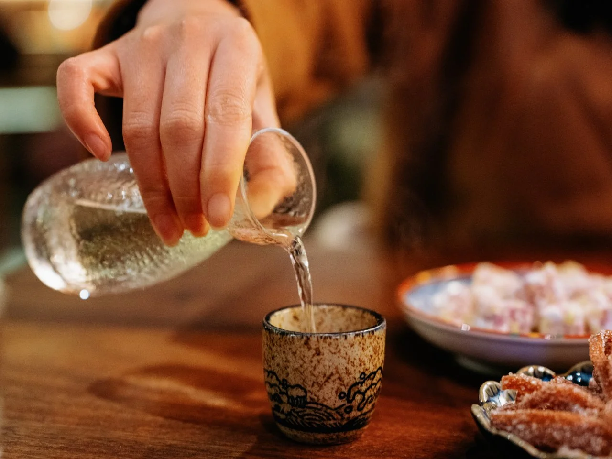

Alcohol
- Sake (Sake is a traditional Japanese alcoholic beverage made from fermented rice)
- Baijiu (Baijiu is a clear, traditional Chinese distilled alcoholic beverage typically ranging from 35% to 60% alcohol by volume)
- Whiskey (Whiskey is a strong alcoholic drink made from fermented grain mash and aged in wooden barrels)
- Soju(Soju is a clear, colorless, distilled alcoholic beverage from Korea that has a smooth, neutral taste similar to a mild, slightly sweet vodka)
